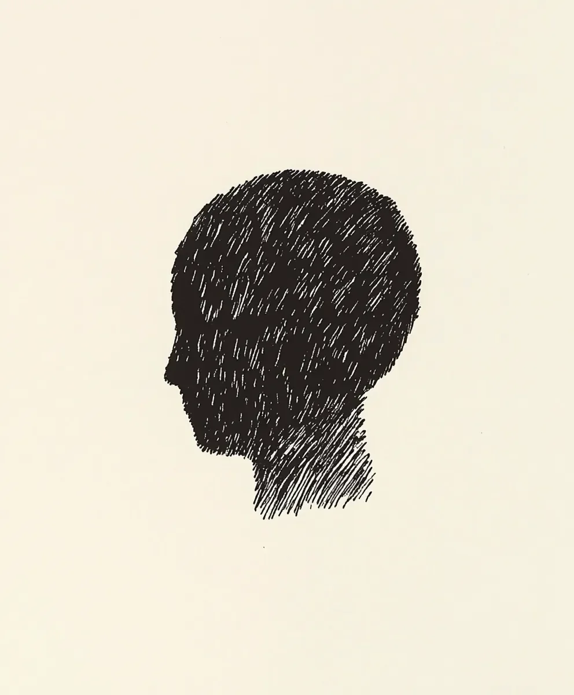

“방금 여기 있었잖아요,” 바리스타가 내 얼굴을 유심히 살피며 의심스러운 눈초리로 말했다. “라지 아메리카노, 샷 추가, 우유 조금—한 시간 전에 주문하셨잖아요.” 보안 카메라 영상은 그녀의 말을 확인해주었다—화면 속에는 분명 내가 있었다, 같은 재킷, 가슴을 가로지르는 같은 메신저백, 오늘 아침에 급하게 손가락으로 빗어 넘긴 같은 흐트러진 머리카락까지.
[“You were just in here,” the barista said, her eyes narrowing with suspicion as she studied my face. “Large americano, extra shot, light room—you ordered it an hour ago.” The security footage confirmed her story—there I was on the screen, same jacket, same messenger bag slung across my chest, same unkempt hair I’d hurriedly finger-combed this morning.]
하지만 나는 여기 온 적이 없었다. 커피를 주문한 적도 없었다. 저런 미소를 지은 적도 없었다—너무 드러난 치아, 너무 가늘어진 눈—나의 완벽한 복제품이 짓고 있는, 내 표정을 과장한 듯한 미소였다.
[Except I hadn’t been here. I hadn’t ordered coffee. I hadn’t smiled that particular smile—teeth too exposed, eyes too narrow—a caricature of my own expression worn by a perfect facsimile of myself.]
내 휴대폰이 진동했다: 내가 사용한 적 없는 물건들, 한 번도 가본 적 없는 가게에서의 구매에 대한 신용카드 알림이었다. 디지털 흔적을 따라 도심으로 가보니, 나 자신—아니, 내 도플갱어—가 메리디안의 접수원을 매력적으로 설득하고 있었다. 그곳은 내가 몇 달 동안 예약을 시도했지만 번번이 실패했던 레스토랑이었다.
[My phone buzzed: a credit alert for purchases I hadn’t made, in shops I’d never entered. The digital breadcrumbs led me downtown, where I found myself—or rather, my doppelgänger—charming the hostess at Meridian, the restaurant where I’d been trying unsuccessfully to get reservations for months.]
내 거울 이미지는 내가 한 번도 경험해보지 못한 여유로움으로 인생을 살아가고 있었다. 나비와 애벌레의 차이처럼, 내 피부를 입고 내가 결코 할 수 없었던 자신감을 뽐내고 있었다. 사람들은 이 다른 나를 따뜻하게 맞이했고, 분명 원본보다 더 좋아하는 사람을 위한 진심 어린 미소를 보냈다. 이 사기꾼은 단순히 내 얼굴을 훔친 것이 아니었다; 그들은 내 모습을 개선했고, 내 거친 모서리를 다듬었으며, 내 장점을 극대화해서 기억할 가치가 있는 사람으로 만들었다.
[My mirror image glided through life with an ease I’d never known, a butterfly to my caterpillar, wearing my skin with more confidence than I ever could. People greeted this other me warmly, with genuine smiles reserved for someone they clearly liked better than the original. The impostor didn’t just steal my face; they improved upon it, polished my rough edges, amplified my best features until they became someone worthy of remembering.]
나는 저녁 거리를 통해 나보다 나은 나 자신을 따라갔다, 내 그림자의 그림자가 되어, 우리가 얼굴을 맞대면 어떻게 될까 궁금해하며. 우리 중 하나는 아침 이슬처럼 사라지게 될까, 존재론적 모순이 해소되어? 아니면 바다를 만나는 강처럼 합쳐져, 우리 둘 중 누구도 알아볼 수 없는 무언가가 될까?
[I followed my better self through the evening streets, a shadow to my own shadow, wondering what would happen if we came face to face. Would one of us dissolve like morning dew, an ontological impossibility resolved? Or would we merge like rivers meeting the sea, becoming something neither of us recognized?]
내 손가락이 휴대폰을 향해 뻗어, 경찰에 전화할 준비를 했지만, 무슨 말을 할 수 있을까? “안녕하세요, 도난 신고를 하고 싶습니다. 누군가 저를 훔쳐갔고, 그들은 제가 했던 것보다 더 잘하고 있어요.” 대신, 나는 추적을 계속했다, 완벽해진 나 자신의 버전을 향한 자석 같은 끌림에 이끌려, 아마도 내 정체성이 도둑맞은 것이 아니라—아마도 마침내 발견된 것일지도 모른다는 전망에 두렵기도 하고 매혹되기도 하면서.
[My fingers reached for my phone, ready to call the police, but what would I say? “Hello, I’d like to report a theft. Someone has stolen me, and they’re doing a better job of it than I ever did.” Instead, I continued my pursuit, drawn by a magnetic pull toward this perfected version of myself, both terrified and fascinated by the prospect that perhaps my identity hadn’t been stolen—perhaps it had finally been found.]